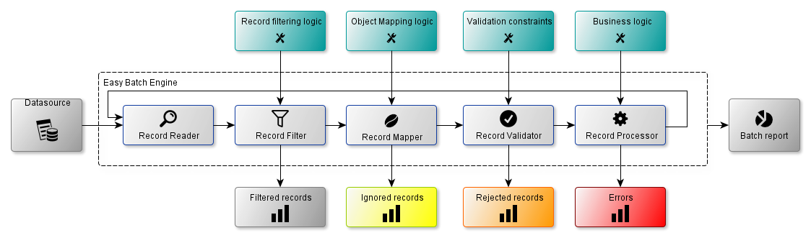
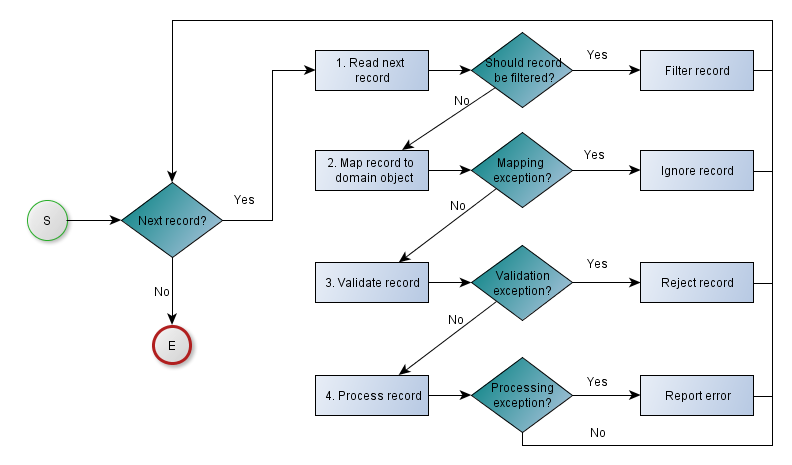

1. Main components
The next figure describes Easy Batch main components and gives an overview of the framework architecture:

The main components are:
- Record Reader : reads record sequentially from the data source
- Record Filter : filters records to be skipped from being processed
- Record Mapper : maps records to Java objects
- Record Validator : applies declared validation constraints on records
- Record Processor : applies business processing logic for each record
All these components (except record reader) are optional. Easy Batch provides a No Operation implementation for each component.
All details about these components can be found in the user guide section.
2. Processing workflow
The workflow used internally by Easy Batch is illustrated by the next figure and described below :

- The engine reads records one by one from the data source.
If the record should be filtered, then the engine skips it and moves to the next one.
- The record mapper then tries to map the record to an instance of the domain object.
If the record is not well formed or cannot be mapped to the domain object,
the engine ignores it and moves to the next one.
- The record validator applies declared validation constraints on the record.
If a validation constraint is violated, then the record is rejected.
- Finally, the business logic is executed by the record processor on the domain object correctly populated with valid data.
If an exception occurs during record processing, the engine logs the exception and moves to the next record.